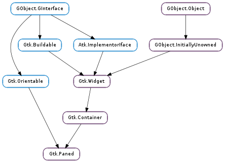

| Subclasses: | Gtk.HPaned, Gtk.VPaned, Gucharmap.Charmap |
|---|
| static | new(orientation) |
| add1(child) | |
| add2(child) | |
| get_child1() | |
| get_child2() | |
| get_handle_window() | |
| get_position() | |
| pack1(child[, resize, shrink]) | |
| pack2(child[, resize, shrink]) | |
| set_position(position) |
| Name | Type | Flags | Description |
|---|---|---|---|
| max-position | int | r | Largest possible value for the “position” property |
| min-position | int | r | Smallest possible value for the “position” property |
| position | int | r/w | Position of paned separator in pixels (0 means all the way to the left/top) |
| position-set | bool | r/w | True if the Position property should be used |
| Name | Parameters | Return | Description |
|---|---|---|---|
| accept-position | bool | The ::accept-position signal is a keybinding signal which gets emitted to accept the current position of the handle when moving it using key bindings. The default binding for this signal is Return or Space. | |
| cancel-position | bool | The ::cancel-position signal is a keybinding signal which gets emitted to cancel moving the position of the handle using key bindings. The position of the handle will be reset to the value prior to moving it. The default binding for this signal is Escape. | |
| cycle-child-focus | bool | bool | The ::cycle-child-focus signal is a keybinding signal which gets emitted to cycle the focus between the children of the paned. The default binding is f6. |
| cycle-handle-focus | bool | bool | The ::cycle-handle-focus signal is a keybinding signal which gets emitted to cycle whether the paned should grab focus to allow the user to change position of the handle by using key bindings. The default binding for this signal is f8. |
| move-handle | Gtk.ScrollType | bool | The ::move-handle signal is a keybinding signal which gets emitted to move the handle when the user is using key bindings to move it. |
| toggle-handle-focus | bool | The ::toggle-handle-focus is a keybinding signal which gets emitted to accept the current position of the handle and then move focus to the next widget in the focus chain. The default binding is Tab. |
| Name | Type | Access |
|---|---|---|
| container | Gtk.Container | r |
Bases: Gtk.Container, Gtk.Orientable
Gtk.Paned has two panes, arranged either horizontally or vertically. The division between the two panes is adjustable by the user by dragging a handle.
Child widgets are added to the panes of the widget with Gtk.Paned.pack1 () and Gtk.Paned.pack2 (). The division between the two children is set by default from the size requests of the children, but it can be adjusted by the user.
A paned widget draws a separator between the two child widgets and a small handle that the user can drag to adjust the division. It does not draw any relief around the children or around the separator. (The space in which the separator is called the gutter.) Often, it is useful to put each child inside a Gtk.Frame with the shadow type set to Gtk.ShadowType.IN so that the gutter appears as a ridge. No separator is drawn if one of the children is missing.
Each child has two options that can be set, resize and shrink. If resize is true, then when the Gtk.Paned is resized, that child will expand or shrink along with the paned widget. If shrink is true, then that child can be made smaller than its requisition by the user. Setting shrink to False allows the application to set a minimum size. If resize is false for both children, then this is treated as if resize is true for both children.
The application can set the position of the slider as if it were set by the user, by calling Gtk.Paned.set_position ().
Creating a paned widget with minimum sizes.
GtkWidget *hpaned = gtk_paned_new (GTK_ORIENTATION_HORIZONTAL);
GtkWidget *frame1 = gtk_frame_new (NULL);
GtkWidget *frame2 = gtk_frame_new (NULL);
gtk_frame_set_shadow_type (GTK_FRAME (frame1), GTK_SHADOW_IN);
gtk_frame_set_shadow_type (GTK_FRAME (frame2), GTK_SHADOW_IN);
gtk_widget_set_size_request (hpaned, 200, -1);
gtk_paned_pack1 (GTK_PANED (hpaned), frame1, TRUE, FALSE);
gtk_widget_set_size_request (frame1, 50, -1);
gtk_paned_pack2 (GTK_PANED (hpaned), frame2, FALSE, FALSE);
gtk_widget_set_size_request (frame2, 50, -1);
| Parameters: | orientation (Gtk.Orientation) – the paned’s orientation. |
|---|---|
| Returns: | a new Gtk.Paned. |
| Return type: | Gtk.Widget |
Creates a new Gtk.Paned widget.
| Parameters: | child (Gtk.Widget) – the child to add |
|---|
Adds a child to the top or left pane with default parameters. This is equivalent to gtk_paned_pack1 (paned, child, FALSE, TRUE).
| Parameters: | child (Gtk.Widget) – the child to add |
|---|
Adds a child to the bottom or right pane with default parameters. This is equivalent to gtk_paned_pack2 (paned, child, TRUE, TRUE).
| Returns: | first child, or None if it is not set. |
|---|---|
| Return type: | Gtk.Widget |
Obtains the first child of the paned widget.
| Returns: | second child, or None if it is not set. |
|---|---|
| Return type: | Gtk.Widget |
Obtains the second child of the paned widget.
| Returns: | the paned’s handle window. |
|---|---|
| Return type: | Gdk.Window |
Returns the Gdk.Window of the handle. This function is useful when handling button or motion events because it enables the callback to distinguish between the window of the paned, a child and the handle.
| Returns: | position of the divider |
|---|---|
| Return type: | int |
Obtains the position of the divider between the two panes.
| Parameters: |
|
|---|
Adds a child to the top or left pane.
| Parameters: |
|
|---|
Adds a child to the bottom or right pane.